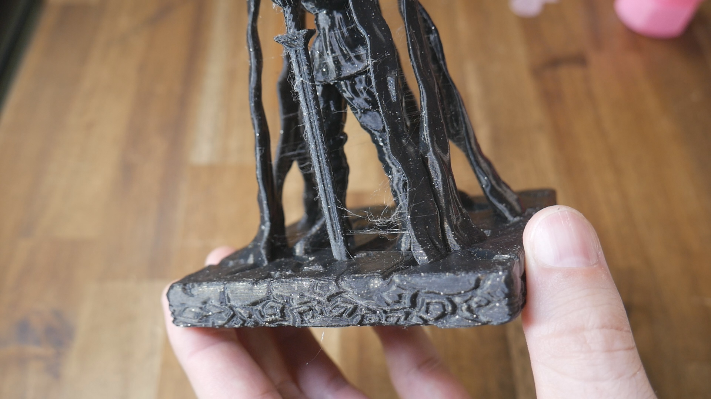
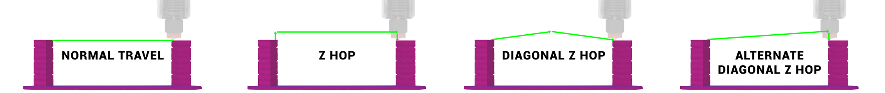

To provide a compromise between no Z hop, which reduces stringing but has a higher chance of the nozzle knocking the model loose, and Z hop, which does the opposite.
This is currently experimental, and may not be needed in many cases. If you have a print that keeps disloging from nozzle contact, this may be worth a try.
Your own sliced gcode and the post processor on on this page.
This page allows you to paste in your existing sliced gcode and have it convert it to diagonal Z hop. It is a simple conversion and has been tested thoroughly, but still use it with caution.
This concept is covered in detail in the following video:
This is the result of a 'what if' thought when printing a tricky model. It may turn out to be useful, useless, or perhaps need alteration to be more effective. The post processing script on this page has limitations that actual slicing software does not. Proper implementation in a slicer might be more effective. Please try it out and post your feedback in the comments of the video above.
If this concept does have merit, I am very happy for it to be implemented into any and every slicer that wants it. If the process helps people, I gladly release it to the public domain.
Retraction is when filament is pulled away from the hot end to reduce pressure. This will usually be done before a travel move. A travel move is a movement made by the printer where no filament is extruded. At the end of the travel move, the extruder will usually unretract to get nozzle pressure back to normal, and then continue printing. Without retraction, prints tend to suffer from stringing, where filament leaks during travel moves and creates fine strings of filament connecting surfaces that should be isolated:
Z hop is an option your slicer can employ either side of a travel move. After retraction, the nozzle will lift up vertically, followed by the travel move, then move vertically downwards to return to the correct height, before unretracting and resuming printing.
Z hop gives the nozzle additional clearance over the model, which can prevent the nozzle from crashing into the model and knocking it loose. This can ensure success on a tricky model where parts with steep overhangs may curl up on the tip into the path of the nozzle. However, Z hop is compromised because it generally introduces fine stringing. It improves reliability at the expense of print quality.
Rather than have Z hop be a three part movement (up, travel horizontally then down), diagonal Z hop breaks a travel move into two sections.
It is hoped that the sequence is faster than standard Z hop, reduces stringing, whilst still offering additional clearance over delicate models to prevent collisions.
The following diagrams best illustrate the movment path for each of these options:
